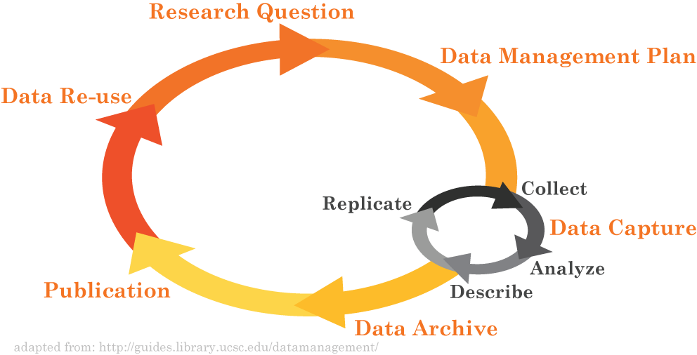

Data Management in the
Research Environment
Research Environment
RSM 674 Spring
Dr. Timothy Norris - Data Curation Fellow - tnorris@miami.edu
Angela Clark - Librarian Associate Professor RSMAS - aclark@rsmas.miami.edu
Angela Clark - Librarian Associate Professor RSMAS - aclark@rsmas.miami.edu
Todays Outline
- Backups vs. Archiving
- Methodological Considerations
- Local Solutions
- Online Solutions
How important is your data?
take a moment of
silence to imagine
what would happen
if your computer
failed today
silence to imagine
what would happen
if your computer
failed today
common data loss scenarios
- Hardware failure
- Disk drive in the computer
- Solid state memory devices (internal drives and external thumb drives)
- Unexpected power problem
- Power surge/drop
- Something touches your computer too much (child/pet)
- Catastrophic event
- Hurricane
- other
- Device accidents
- Stolen
- Dropped/spilled/etc
- Pressed format accidentally
common data loss scenarios
"Researchers don't delete data, they lose it"
John Bixby - Vice Provost for Research at University of Miami
John Bixby - Vice Provost for Research at University of Miami
a warning ...
this will get personal
it CAN happen to you
it is LIKELY that it will happen to you

in the Lifecycle?
Data Protection, Backups, Archiving, Preservation
Are They the Same Thing? Not Quite…
Are They the Same Thing? Not Quite…
- Data Protection
- Includes topics such as backups, archives, and preservation
- also includes physical security, encryption, and others not addressed here (for later)...
- Terms “backups” and “archives” are often used interchangeably, but do have different meanings
- Backups: a copy (or copies) of the original file is made before the original is overwritten
- Archives: preservation of the file
- Data Preservation
- Includes archiving in addition to processes such as data rescue, data reformatting, data conversion, metadata
slide from

Backups vs. Archiving
- Backups
- Used to take periodic snapshots of data in case the current version is destroyed or lost
- Backups are copies of files stored for short or near-long-term
- Often performed on a somewhat frequent schedule
- Archives
- Used to preserve data for historical reference or potentially during disasters
- Archives are usually the final version, stored for long-term, and generally not copied over
- Often performed at the end of a project or during major milestones
It is a good idea to have multiple copies of your backups and archives, in case one copy fails.
slide from
Backup and Storage
Major Considerations
Major Considerations
- Who is responsible for backup ?
- How often do you backup ?
- Partial vs. full backups ?
- Non-digital backups ?
- Where (literally) will the backups be located ?
- Do the backups need a description (metadata) ?
- Manual vs automatic ?
- Recovery procedures ?
- Verification – how do you know the backup was successful ?
- How long do you keep your backups ?
- What happens when the project ends ?
Don't forget
- Data conversions and formats
- Versioning
- File Naming
Data in real life
- A design firm was handling their own backups. The system was working fine and the backup software was reporting that the data was successfully backed up.
slide from
Data in real life
- The administrator checked the backups immediately after they were done and confirmed they were good.
slide from
Data in real life
After a computer virus erased most of their files, they went back to their backups. Unfortunately they found that the backups were all blank and all of the data was gone. Only after some investigation did they discover that the computer tapes (which contained the backups) were placed against a wall that had an elevator on the other side of it. When the elevator went past, the magnets inside erased all of the tapes.
Had they checked their backups properly, they probably would have noticed this before there was an emergency
Had they checked their backups properly, they probably would have noticed this before there was an emergency
slide from
Validation
Do you trust your computer?
Do you trust your computer?
- Always check file sizes after backing up
- Or at least check periodically
- The MD5 checksum
- With this you can monitor the integrity of your data over time
- Other checksums are CSC and SHA
- Like a fingerprint for a file
- Command line: md5sum
Syncronization
Do you trust your computer?
Do you trust your computer?
- Cloud based services (box, dropbox, etc.) are based on Folder Synchronization
- Only copies newer files (that have changed or been created)
- Thus contains a "mirror image"
- There are commercial and free folder synchronization tools
- All have privacy and user data issues
- All based on “command line” tools that already exist on your computer
- Command line interface (CLI) synching
- Mac or Linux: rsync
- Windows: xcopy or robocopy
Backup Media Options
- Local Machines
- Hard disk in computer
- External hard drives
- Online Solutions
- Networked drives (personal cloud)
- Repositories
- Versioning Tolls
- The "cloud"
2.5” 500 GB Western Digital SATA
Evan-Amos - CC BY-SA 3.0
Evan-Amos - CC BY-SA 3.0
Spinning (metal) disk: Laptop or Desktop
- Pros
- High level of control over file system, naming, and physical location of disk
- Easy to backup
- Convenient
- Cons
- Risk of malware (virus)
- Risk of theft, damage, loss, etc
- System can eventually corrupt the disk (especially pcs)
- Finite lifespan
RECOMMENDATIONS:
- Never have master copies on your computer
- Not for long term storage
- Have a backup plan for this storage option
Spinning (metal) disk: (Network) Server
- Pros
- High level of control over file system, naming, and physical location of disk
- Likely has backup and maintenance schedule
- Possible duplicate (mirror) images – RAID systems
- Safe physical location
Redundant Array of Independent Disks - Cons
- Expensive to maintain
- Migration can be difficult
- Susceptible to catastrophic events
RECOMMENDATIONS:
- Good for master copies
- Good for up to 5 year storage
External storage: memory and drives
- Pros
- Drives are cheap (sort of) and portable
- Convenient
- Memory is cheap and portable
- Cons
- Connection technologies change (USB, Firewire, SATA, and so on)
- Drive failure (both spinning drives and memory devices)
- Easily damaged, stolen or lost
- Finite space for large projects multiple drives may be necessary
- Malware can be propagated (think unsafe sex)
RECOMMENDATIONS:
- Not for master copies
- Not for long term storage
- Have a backup plan for this storage option
Does anyone use CDs anymore??? ZIP disks??? NOT recommended!!
External storage: magnetic tapes
- Pros
- Massive amunts of data, cheap
- Fast backup
- Reusable
- Cons
- Slow retrevial
- Degradation over time
- Installation and maintenance is expensive
RECOMMENDATIONS:
- Excellent for rolling backups
Networked drives: personal cloud
- Pros
- Drives are cheap (sort of) and portable
- Convenient access from anywhere
- Easy to install and sync
- Private: password protected
- Cons
- Upload/download bottlenecks
- Susceptible to acts catastrophic events
- Needs permanent power
- Needs IP address
RECOMMENDATIONS:
- Good "third" option
Western Digital, Seagate . . .
Perhaps buy online, out of state?
Perhaps buy online, out of state?
Data Repositories

Repositories
- Pros
- Maintained by others
- Your data is accessible, visible
- Mostly cost free
- Cons
- Like journals, can be well recognized, but not necessarily
- Takes time to format data and metadata correctly
- Your data is accessible, visible
RECOMMENDATIONS:
- Good preservation option
- Not good for working data
Online Versioning and Sharing Services
- For programmers only?
- Github: http://github.com
- Bitbucket: http://bitbucket.org
- Subversion: https://subversion.apache.org
- Project Management (for fee service)
- Basecamp: http://basecamp.com
- Teamwork: http://teamwork.com
Online Versioning and Sharing
- Pros
- Maintained by others
- Often open text-based formats
- Excellent version control and backup
- Cons
- Steep learning curve
- Doesn’t handle proprietary data well
- Your data is accessible, visible (sometimes)
RECOMMENDATIONS:
- Depending on data type, can be good for working data
- Privacy concerns vary
The Cloud
The term “cloud computing” (or just “cloud”, in the context of computing) is a marketing buzzword with no coherent meaning. It is used for a range of different activities whose only common characteristic is that they use the Internet for something beyond transmitting files. Thus, the term spreads confusion. If you base your thinking on it, your thinking will be confused.
Richard Stallman - https://www.gnu.org/philosophy/words-to-avoid.html
Richard Stallman - https://www.gnu.org/philosophy/words-to-avoid.html

Networked drives: the "cloud"
- Pros
- No failure or backup worries (they do it)
- Can be secure (depends)
- Convenient
- Good for catastrophic events
- Cons
- Upload/download bottlenecks
- Fees?
- Long-term? No standards?
- How to get copies of all your data (try this for google drive)
- No control, AND you are responsible if something is hacked (according to US government export laws)
RECOMMENDATIONS:
- Good for quick and dirty collaborations
- a good “third” option
- Not good for large data
- Privacy concerns vary
Storage and Backup
file-syncing software in the cloud
file-syncing software in the cloud
- Google Drive? Drop Box? Sky Drive? iCloud?
- Drop Box is good for temporary sharing
- Google Drive is good for collaborative work: synchronous file editing with multiple users
- What about security?? privacy??
- BOX - https://www.box.com/
- University of Miami has an affiliation
- All content is encrypted
- All platforms are supported including smart phones
- Recently became “unlimited”
http://www.miami.edu/it/index.php/about_it/aas/ps/documentation/box/
The Bottom Line: Storage and Backup
[ best practices ]
[ best practices ]
DO
- RAID storage
- External hard drives (XFAT)
- Cloud storage and file-syncing
- Duplicate computers or hard drives
- Write down roles and responsibilities
- Organize, file naming conventions, versioning
- Have automatic backups
- Verify backups
- Open formats
DON'T
- USB thumb drives
- Email files to yourself
- Save files without knowing their location in the computer’s file structure
- Backup when you remember
The XFAT format is essential if you ever want to share between a mac and a pc
Mac: Applications:Utilities:Disk Utility
PC: right click in explorer -> Format
Mac: Applications:Utilities:Disk Utility
PC: right click in explorer -> Format
The Bottom Line: Storage and Backup
[ best practices ]
[ best practices ]
Have all your work in at least three places at all times: working version + two backups
Drives fail, computers break, viruses happen, computers get stolen, usb thumb drives ALWAYS fail, you will make a mistake and delete your work on accident, ex-partners seek revenge, and the list goes on . . .
Drives fail, computers break, viruses happen, computers get stolen, usb thumb drives ALWAYS fail, you will make a mistake and delete your work on accident, ex-partners seek revenge, and the list goes on . . .
Short-term solutions at UMa
| Size Limits | HIPPA Compliant | Collaboration and Sharing | Relational Databases | Self Guided | No Costs | |
| Box Cloud-Based Storage | unlimited b |  |
 |
|
||
| Cloud Storage (CCS) | > 10 TB | c |
|
|||
| File Server (UMIT) | > 1 TB d | |
d |
e |
If one of these solutions does not meet your needs, you can consider self-managed solutions or please feel free to contact the UM Information Technology (UMIT) Service Desk, research data services at the Libraries, or the advanced computing services at CCS for further assistance.
- None of these options are for long-term storage, please see our institutional repository or identify another disciplinary repository to meet this need.
- Box’s single file upload limit 15GB. Also note that network speed and congestion affects performance.
- Please see the advanced computing resources at CCS or contact the Advanced Computing group directly for more information.
- To begin the request process, please contact the UMIT Service Desk: email itsupportcenter@miami.edu or call (305) 284-6565.
- Every request is evaluated on a case-by-case basis. Evaluations are based on the requested resource needs and the current resource allocations across campus. If the request is exceptionally large there may be cost sharing requirements.
Short-term solutions at UM
For general sharing and collaboration needs please see the cloud storage solutions that Information Technology provides for students, staff and faculty:
Box |
 Google Drive |
OneDrive |
Short-term solutions at UM
- If you need more space at the University of Miami go to the Center for Computational Science (CCS)
- They sell space using the condo model
- ~28 TB for $7,000 (2015) – in perpetuity
- Not necessarily backed up (but it is raided)
- Talk to Joel Zysman at advanced computing resources
Storage and Backup
File syncing tools that exist on your machine already:
You will have to understand the command line first:
- Mac and linux: rsync
- PC: xcopy or robocopy
You will have to understand the command line first:
- Mac: Applications/Utilities/Terminal
- PC: Start Button->search “cmd”
Storage and Backup
- PC: xcopy
C:\> xcopy <source> <destination> [<options>]
C:\> xcopy c:\Users\tnorris\Documents\MapData\*.* G:\MapData /D /S /Y
This copies all NEWER files from the MapData directory on the local machine
to the backup MapData folder on an external hard drive.
C:\> xcopy /?
This will show all of the options for the xcopy command. You can see that:
/D tells xcopy to only copy newer files
/S goes through all sub-directories
/Y tells xcopy to proceed without asking the user to confirm (be careful!!)
Storage and Backup
- Mac or linux: rsync
% rsync [<options>] <source> <destination>
% rsync -arvu /Users/tnorris/Documents/MapData/* /Volumes/MyDrive/MapDataFB
This copies all NEWER files from the MapData directory on the local machine to
the backup MapDataFB folder on an external hard drive named “MyDrive”.
% man rsync
This will show all of the options for the rsync command. You can see that
-a tells rsync preserve archival information (date stamps, owners, permissions)
-r tells rsync to go through all sub-directories
-v tells rsync to tell you what it is doing (which files it copied)
–u will only update newer files and skip older files.
Reading for Next Class (Wednesday)
- University of Miami Faculty Manual 2016-17. READ ONLY pp 135-138. SEARCH for "data" and scan relevant sections. https://umshare.miami.edu/web/wda/facultysenate/FacultyManual.pdf.
- Carroll MW (2015) Sharing Research Data and Intellectual Property Law: A Primer. PLoS Biol 13(8): e1002235. http://dx.doi.org/10.1371/journal.pbio.10022358.
- Briney, K., Goben, A., & Zilinski, L. (2015). Do You Have an Institutional Data Policy? A Review of the Current Landscape of Library Data Services and Institutional Data Policies Journal of Librarianship and Scholarly Communication, 3(2). http://dx.dio.org/10.7710/2162-3309.1232. SKIM THIS - LOOK MOSTLY AT THE RESULTS OF THE STUDY.
- Johns Hopkins University Policy on Access and Retention of Research Data and Materials (2008).
http://dms.data.jhu.edu/files/2016/08/JHUDataRetentionPolicy2008_WithAppendices.pdf.
Optional Reading for Next Class (Wednesday)
- Boyle (2003). The Second Enclosure Movement and the Construction of the Public Domain. Law and Contemporary Problems, 66:33(Winter/Spring), 33-74. http://scholarship.law.duke.edu/lcp/vol66/iss1/2/.
- David (2008). The Historical Origins of ‘Open Science’: An Essay on Patronage, Reputation and Common Agency Contracting in the Scientific Revolution. Capitalism and Society 3(2), Article 5. https://dx.doi.org/10.2202/1932-0213.1040.
- Center for Open Data Enterprise (2016). Open Data Transition Report: An action plan for the next administration. http://opendataenterprise.org/reports/transition-report.pdf.
- Uhlir, Paul (ed) (2016). "Legal Interoperability of Research Data: Principles and Implementation Guidelines." Research Data Alliance - Committee on Data for Science and Technology - Legal Interoperability Interest Group. https://zenodo.org/record/162241#.WDRQln17Ifg
- Madison (2011). “Knowledge Curation.” Notre Dame Law Review, Vol. 86, p. 1957, 2011; U. of Pittsburgh Legal Studies Research Paper No. 2011-13. Available at SSRN: http://ssrn.com/abstract=1848086
- Mons, Barend , et al (2011). The value of Data. Nature Genetics, 43, pp 281-283. https://dx.doi.org/10.1038/ng0411-281.
Todays Outline
- Security and Privacy
- File System Organization
- Midterm Assignment
Spinning (metal) disk: Laptop or Desktop
- Pros
- High level of control over file system, naming, and physical location of disk
- Easy to backup
- Convenient
- Cons
- Risk of malware (virus)
- Risk of theft, damage, loss, etc
- System can eventually corrupt the disk (especially pcs)
- Finite lifespan
SECURITY CONSIDERATIONS:
- Virus Control
- Theft or damage
- Disk failure
Spinning (metal) disk: (Network) Server
- Pros
- High level of control over file system, naming, and physical location of disk
- Likely has backup and maintenance schedule
- Possible duplicate (mirror) images – RAID systems
- Safe physical location
Redundant Array of Independent Disks - Cons
- Expensive to maintain
- Migration can be difficult
- Susceptible to catastrophic events
SECURITY CONCERNS:
- Use SSL connections
- Good control (physical location)
- Encryption?
External storage: memory and drives
- Pros
- Drives are cheap (sort of) and portable
- Convenient
- Memory is cheap and portable
- Cons
- Connection technologies change (USB, Firewire, SATA, and so on)
- Drive failure (both spinning drives and memory devices)
- Easily damaged, stolen or lost
- Finite space for large projects multiple drives may be necessary
- Malware can be propagated (think unsafe sex)
SECURITY CONCERNS:
- Theft and damage
- Good control (physical location), but you are responsible
- Encryption?
- Virus protection
Does anyone use CDs anymore??? ZIP disks??? NOT recommended!!
Networked drives: personal cloud
- Pros
- Drives are cheap (sort of) and portable
- Convenient access from anywhere
- Easy to install and sync
- Private: password protected
- Cons
- Upload/download bottlenecks
- Susceptible to acts catastrophic events
- Needs permanent power
- Needs IP address
SECURITY CONCERNS:
- Use SSL connections
- Theft or damage
- Encryption?
Western Digital, Seagate . . .
Perhaps buy online, out of state?
Perhaps buy online, out of state?
Networked drives: the "cloud"
Includes: Repositories, Online Versioning and Sharing
- Pros
- No failure or backup worries (they do it)
- Can be secure (depends)
- Convenient
- Good for catastrophic events
- Cons
- Upload/download bottlenecks
- Fees?
- Long-term? No standards?
- How to get copies of all your data (try this for google drive)
- No control
SECURITY CONCERNS:
- Check the service agreement for encryption algorithm
- Use SSL connections
- No control
Privacy
Data derived from human subjects research
University of Miami Human Subjects Research Office
http://uresearch.miami.edu/regulatory-compliance-services/hsro
Personally Identifiable Information (PII)
- Must meet federal compliance requirements for security and privacy
- As examples: HIPAA, FERPA, FISMA
University of Miami Human Subjects Research Office
http://uresearch.miami.edu/regulatory-compliance-services/hsro
Personally Identifiable Information (PII)
- Name, SSN, Date of Birth, Drivers License, Address, IP Address, Phone Number, anything that can uniquely identify a person
- NIH Guide for Identifying Sensitive Information
https://oma.od.nih.gov/DMS/Documents/Privacy/Guide%20for%20Handling%20Sensitive%20Information%20at%20NIH.pdf
UM Secure Storage Options
BOX is HIPAA compliant
CCS storage services are HIPAA compliant
Qualitrics survey tool to build and manage secure online surveys
http://it.miami.edu/a-z-listing/survey-tools/index.html
CCS storage services are HIPAA compliant
Qualitrics survey tool to build and manage secure online surveys
http://it.miami.edu/a-z-listing/survey-tools/index.html
UM Office of Research
Velos: http://uresearch.miami.edu/research-resources/velos
REDcap: http://uresearch.miami.edu/research-resources/redcap
Velos eResearch Clinical Trials Management Software is a tool for managing clinical trials data.
REDcap: http://uresearch.miami.edu/research-resources/redcap
Research Electronic Data Capture is an application that allows users to build and manage online surveys and databases quickly and securely.
Not all data has security and privacy "needs", BUT ...
- Use automatic updates (mostly for virus issues)
- Use anti-virus software (also anti-intrusion)
- Use a firewall (also password protect file-sharing)
- Never connect to untrusted wireless connections
- Computer disposal?
- Know HTTPS, SSH/SCP, sFTP
- Understand certificate errors
- Do not send confidential email
- Public computers
- Always log out
- Never leave data/files

{kind=link}
Common sense (?)
Password lock all devices (in case of theft or loss)
Encryption
Empty trash securely
- Set screen to lock
- This is not foolproof, any hacker knows how to get past a password. See: http://pogostick.net/~pnh/ntpasswd/ for example.
Encryption
- UM Policy: http://www.miami.edu/it/index.php/policies/
- Mac: System Preferences: Security and Privacy: FileVault
- PC: Control Panel: BitLocker Drive Encryption
Empty trash securely
- Mac: Finder->Preferences: Advanced Tab, “Empty Trash Securely”
- PC: Eraser (open source GPL): http://eraser.heidi.ie/
Encryption
$ openssl
$ openssl des3 -in test.txt -out encrypted.txt
$ openssl des3 -d -in encrypted.txt -out testout.txt
Singh, S. 1999. The Code Book: the science of secrecy from ancient Egypt to quantum cryptography. Fourth Estate, London.
NOTE: encryption mistakes are irreversible
Once again ...
this will get personal
access and passwords
online habits
Access Terms (keywords)
User ID / Password
Limited Network Access -or- local area network (LAN)
Role-Based Access Rights
your UM account
Limited Network Access -or- local area network (LAN)
some research labs, many government offices, many business offices: usually limited to physical presence within the network and virtual private networks (VPN)
Role-Based Access Rights
your computer login (administrator, standard, sharing only, guest)
Password Management
Mistakes leading to weak passwords (Do not make these mistakes when choosing a password):
- your username as a password (even backwards or mixed up).
- using any name, or any word in any language.
- obvious personal information (your year of birth, phone number, national insurance number, address, etc.).
- all digits, or just one letter.
- real words with only one or two obvious digit substitutions, like 'p4ssword' or '5ecret'.
- fewer than eight characters ("brute force" attack cracks 7 letters in a few minutes).
- characters from books, films, etc. (Gandalf, Sherlock), band names, song titles etc. (no matter how obscure).
- passwords that are too easy or too difficult to type

Passwords should be long
7 common cloud missteps
Mistakes leading to weak passwords (Do not make these mistakes when choosing a password):
- You lost control of your data because of the fine print in a user agreement.
Do a google search “
shady user agreement” - You sent out a public link to a Google Doc so others could view and edit.
Invite people through emails- Your cloud account gets hacked (bad password).
Better password management- You use the same password for every app on your phone.
See above- Web trackers are storing information on the sites you visit online.
Private browsing? Don’t stay logged in to google all the time?- You granted an application (smartphone) every permission under the sun.
Be thoughtful when you install and run new apps- A small mobile app startup you know nothing about has access to your banking data.
Let you bank manage your banking data
- You sent out a public link to a Google Doc so others could view and edit.